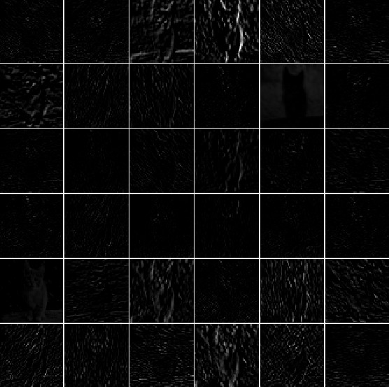

From linear classifiers to neural networks
CHAPTER 02 · FROM SCRATCH
Neurons, nonlinear activations, hidden representations, and the forward pass
One question: what must we add to bend a linear decision boundary?
Dr. A. Belcaid
Last time: one template per class
\[S=XW+b\]
Each column of \(W\) is one class template.
A linear classifier learns—but draws only flat boundaries.
Illustration: Stanford CS231n .
Four images, four linear regions
Changing \(W\) rotates and translates boundaries. It never bends them.
Illustration: Stanford CS231n .
A dataset that refuses one straight answer
The failure is not optimization. No choice of one line solves this geometry.
Course schematic inspired by the CS231n spiral case study .
Exercise · Can one line separate XOR?
Draw one line that puts both blue points on one side and both coral points on the other.
PAUSE 90 seconds Try before declaring it impossible.
SOLUTION
No line works. XOR is not linearly separable.
More linear layers still make one line
\(h=XW_1+b_1\) → \(S=hW_2+b_2\)
\[S=X\underbrace{(W_1W_2)}_{W'}+\underbrace{(b_1W_2+b_2)}_{b'}\]
Depth without nonlinearity collapses into one affine map.
First, play with the answer
LIVE EXPERIMENT
Select the circle dataset.
Keep only \(x_1\) and \(x_2\) as inputs.
Add two hidden layers.
Press play and watch the boundary bend.
The network can fit the circles. Today we open the machine and explain why.
Interactive tool: TensorFlow Playground , created by Daniel Smilkov and Shan Carter. Screenshot reproduced from an experiment using the same tool.
Today’s construction
flowchart LR
A[FAILURE<br/>linear limits] --> B[NEURON<br/>evidence]
B --> C[ACTIVATION<br/>nonlinearity]
C --> D[NETWORK<br/>composition]
D --> E[REPRESENTATION<br/>bend space]
E --> F[FORWARD PASS<br/>implement]
classDef first fill:#2878c8,color:#fff,stroke:#2878c8
classDef middle fill:#fffdf7,color:#17212b,stroke:#657079
classDef last fill:#ef5b45,color:#fff,stroke:#ef5b45
class A first
class B,C,D,E middle
class F last
01 · A neuron
What does \(w^Tx+b\) actually do?
1 Each input point receives a score \(z\) .
2 The line \(z=0\) separates negative from positive scores.
3 \(w\) points toward scores that increase.
4 \(b\) shifts the line without rotating it.
Before activation, a neuron is a learned linear test: “which side of this boundary is the input on?”
A layer repeats that test with different weights
Every hidden neuron draws a different boundary and produces one new feature.
Conventional layered notation following NN-SVG .
A nonlinear gate turns scores into responses
The same gate acts independently on every neuron: some respond strongly, some weakly, and some almost not at all.
Which gate should we use—and what happens to its gradient?
Sigmoid · the classical soft gate
\[\sigma(z)=\frac{1}{1+e^{-z}}\] \[\sigma'(z)=\sigma(z)\bigl(1-\sigma(z)\bigr)\]
Strength Smooth, bounded, interpretable as a gate in \((0,1)\) .
Weakness Saturates; gradients approach zero for large \(|z|\) . Output is not zero-centered.
Activation analysis: Goodfellow, Bengio & Courville, Ch. 6 .
tanh · a centered soft gate
\[\tanh(z)=\frac{e^z-e^{-z}}{e^z+e^{-z}}\]
Strength Output in \((-1,1)\) and centered around zero.
Weakness Still saturates on both sides, producing small gradients.
ReLU · a hard gate with a linear side
\[\operatorname{ReLU}(z)=\max(0,z)\]
Strength Cheap, sparse, and non-saturating for positive inputs.
Weakness Zero gradient when inactive; a unit can become permanently “dead.” Not differentiable at zero.
Rectified units in modern vision: Krizhevsky, Sutskever & Hinton, 2012 .
Exercise · Pass through ReLU
For \(x=(2,-1)\) , \(w=(-3,4)\) , \(b=1\) , compute \(z=w^Tx+b\) and \(a=\operatorname{ReLU}(z)\) .
PAUSE 75 seconds Separate affine and activation.
SOLUTION
\[z=-6-4+1=-9,\qquad a=\max(0,-9)=0.\]
What smallest change to \(b\) makes it active?
Experiment · Same network, three activations
CONTROLLED COMPARISON
Keep the circle data, inputs, hidden layers, learning rate, and initialization fixed.
Change only:
\[\text{sigmoid}\quad\rightarrow\quad\tanh\quad\rightarrow\quad\operatorname{ReLU}\]
Speed How many epochs until the boundary closes?
Shape Is the learned boundary smooth or piecewise linear?
Units Which hidden neurons saturate or stay inactive?
Loss Do all three reach the same final result?
An activation is not decoration: it changes both representation and optimization.
02 · From neurons to networks
A layer evaluates many neurons at once
Each layer is a vector of neurons; every connection represents a learned weight.
Right illustration: Stanford CS231n, Neural Networks Part 1 . Left: course diagram using the same conventional notation.
Build the forward pass—one reveal at a time
CIFAR-10 shapes tell the story
\(X\) \(B\times3072\)
×
\(W_1\) \(3072\times H\)
+
\(b_1\) \(H\)
→
\(Z_1,H\) \(B\times H\)
×
\(W_2\) \(H\times10\)
+
\(b_2\) \(10\)
→
\(S\) \(B\times10\)
YOUR TURN · 90 seconds
\(B=64\) , \(D=3072\) , \(H=100\) , \(C=10\) . Give the shapes of \(W_1,b_1,Z_1,H,W_2,b_2,S\) .
\[W_1:(3072,100),\ b_1:(100,),\ Z_1=H:(64,100),\] \[W_2:(100,10),\ b_2:(10,),\ S:(64,10).\]
How many learned numbers?
\[3072H+H+10H+10\]
\(H=100\) → \(308{,}310\) parameters
If we double the hidden width to \(H=200\) , what happens to every parameter shape and to the total count?
PAUSE 60 seconds Only dimensions involving \(H\) change.
\(W_1:(3072,200)\) , \(b_1:(200,)\) , \(W_2:(200,10)\) , \(b_2:(10,)\) → 616,610 parameters .
Same Softmax ending, richer beginning
Linear
\[S=XW+b\]
Pixels vote for classes.
Two-layer
\[S=\phi(XW_1+b_1)W_2+b_2\]
Pixels create features first.
We learned a better representation for the same output classifier.
03 · Hidden representations
Hidden units become reusable detectors
LEARNED FILTERS · PARAMETERS
FEATURE MAPS · RESPONSES TO ONE CAT

A filter is reusable: the same edge detector can respond wherever that feature appears.
AlexNet conv1 filters and activations: Stanford CS231n ; architecture: Krizhevsky, Sutskever & Hinton, 2012 .
A representation is an activation pattern
unit \(h_1\) \(h_2\) \(h_3\) \(h_4\) \(h_5\) \(h_6\)
cat A
cat B
truck
REAL ALEXNET POOL5 UNITS · MAXIMUM ACTIVATIONS
Meaning is distributed; one unit need not equal one human concept.
The white numbers are activation magnitudes for selected AlexNet pool5 units: Stanford CS231n .
Width adds pieces
More capacity fits more structure—or more noise. Validation still decides.
Course schematic; region analysis: Montúfar et al., 2014 .
Universal approximation—carefully stated
Can one hidden layer represent any continuous function?
Under suitable assumptions and enough units: yes, arbitrarily closely.
Representable does not mean easy to learn, data-efficient, robust, or practical.
Results: Cybenko, 1989 ; Hornik, 1991 .
Exercise · Remove the ReLU
Is \(f(X)=(XW_1+b_1)W_2+b_2\) more expressive than one affine layer? Prove or refute.
PAUSE 2 minutes Expand and name combined parameters.
SOLUTION
\[f(X)=X(W_1W_2)+(b_1W_2+b_2)=XW'+b'.\]
Still affine. ReLU prevents collapse.
04 · Implement the forward pass
Keep the network in one class
class TwoLayerNet:def __init__ (self , input_dim, hidden_dim, n_classes):self .W1 = ...self .b1 = ...self .W2 = ...self .b2 = ...def forward(self , X):return scores, cachedef predict(self , X):= self .forward(X)return scores.argmax(axis= 1 )
The class groups state and behavior; every mathematical operation stays visible.
Affine: shape first, code second
def affine(X, W, b):return X @ W + b
\(X\) \((B,D)\)
\(W\) \((D,H)\)
\(b\) \((H,)\)
output \((B,H)\)
Bias broadcasts because its dimension matches output columns.
ReLU: preserve shape, change geometry
def relu(Z):return np.maximum(0 , Z)
\([-2,\ 0.4,\ 3]\) → \([0,\ 0.4,\ 3]\)
The zero pattern selects a local linear region.
Diagnostic 1 · Initial loss has a prediction
10 near-equal probabilities → \(p_y\approx0.1\) → \(-\log(0.1)\approx2.303\)
\(L\approx2.3\) plausible
\(L\gg2.3\) large scores or bug
NaN numerical failure
A known baseline turns “the code ran” into a testable claim.
Diagnostic 2 · Count active ReLUs
active 48%
active 1%
active 100%
All-off, all-on, or identical activations expose initialization and broadcasting problems.
Exercise · Diagnose the forward pass
For 64 images, the hidden activation has shape (100,) and every image gets identical scores. What happened?
PAUSE 90 seconds Ask which axis disappeared.
SOLUTION
The batch axis was reduced, or one vector was broadcast to every example. Expected: (64, 100) .
Shape assertions are executable mathematics.
We can now compute one scalar
64 images \(64\times3072\)
→
hidden \(64\times100\)
→
scores \(64\times10\)
→
loss one number
Which of 308,310 parameters should move—and by how much?
Numerical gradients do not scale
one parameter 2 forward passes
×
308,310 parameters 616,620 passes
×
every SGD step impossible
Softmax and SVM derived one gradient. A network needs a reusable mechanism.
Next week: send responsibility backward
flowchart LR
X[inputs X] --> A[affine 1]
A --> R[ReLU]
R --> B[affine 2]
B --> L[loss L]
L -. gradient .-> B
B -. gradient .-> R
R -. gradient .-> A
A -. gradient .-> X
classDef forward fill:#2878c8,color:#fff,stroke:#2878c8
classDef loss fill:#ef5b45,color:#fff,stroke:#ef5b45
class X,A,R,B forward
class L loss
Backpropagation reuses local derivatives to compute every gradient in roughly one additional pass.
Layered backpropagation: Rumelhart, Hinton & Williams, 1986 .
The whole construction
1 Linear scores draw flat boundaries.
2 Neurons combine evidence.
3 Nonlinearity prevents collapse.
4 Hidden layers learn coordinates.
5 Forward ends at one scalar.
Chapter 03 · Backpropagation and autodiff — assign responsibility efficiently.